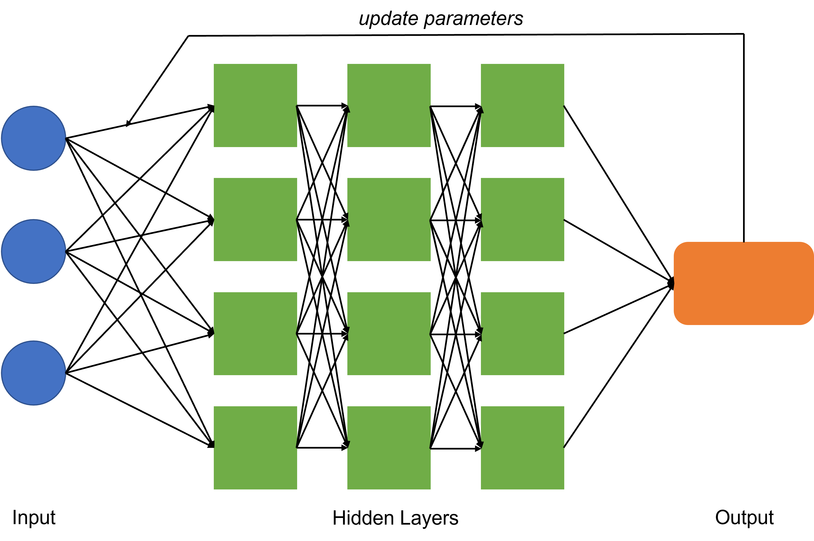

Language models are an important part of natural language processing (NLP) since they provide a way for computers to process or understand the natural language and to be able to extract information that can be used in different applications. These natural language are something that is being used by humans and evolves naturally through repetitive use (speech, sign language, non-verbal cues).
What is a language model?
In its simplest form, a language model is a probability distribution such that, given a sequence of words, a language model will give the probability of all the words being chosen next in the available vocabulary. For example, given a series of words \(w_{1:(t-1)} = (w_1,...,w_{t-1})\), a language model will give us the probability of all words in its vocabulary \(V\) to appear next to the series of words (Penke 2022). \[
P(w_t | w_{1:(t-1)}), \ \ \ \ \ \ \ w_1,...,w_{t-1}\in V
\]
So if we want our model to complete our sentence, we select the word which has the highest probability and then put that word to the series of words and then use the model again to generate the next word. So the essence of a language model is to simply imitate how a human would respond to different prompts.
To give an idea of what a language model can do, let us look at the ChatGPT, see Figure 1, which is an artificial intelligence (AI) chatbot that is developed by OpenAI last November 2022.
Figure 1: Example of a language model (ChatGPT)
We asked the AI to explain quantum computing in simple terms and we see how it was able to provide an extensive discsussion of what quantum computing is. Now, the reason why these AI chatbots are gaining such traction is that it serves as a good starting point when writing or when you want to gain a better understanding of topics that were not discussed properly for example.
Neural Network-Based Language Model (Types of Language Models)
ChatGPT is an example of a generative pre-trained transformer (GPT) which is a type of language model that relies on deep learning that generates texts based on a given input text.
Training Language Models
Focusing on the transformer models, we need to know how the neural network model is being trained: including the pre-training and fine-tuning processes. In pre-training process, we provide a general language model that has a good understarding of how language is being used in a variety of settings.
For a neural network, we use \(n\) inputs and then it is processed in several hidden layers until it reaches an output layer. Ideally, we want the output of our neural network to be close to the actual/real output. If that is not the case, then we use gradient descent to change the parameters to reduce the loss function of our network. In gradient descent, what happens is we use the output and compute some values and then feed it back to our hidden layers until the loss is minimized, which is why the process is also called backpropagation, see Figure 2.

Figure 2: Simplified Neural Network
One problem of the neural network above is that the input size is fixed and in general, we would want to process input sizes that are longer or shorter. Now in the field of language modelling, there are two types of networks that were considered state of the art: recurrent neural networks and long short-term memory networks.
Recurrent neural networks (RNNs)
In a recurrent neural network, we still have the same neural network discussed above to every word in a series of words. Whats different for RNNs is that last word (newest word) in the sequence of words has the most influence in choosing the next word and the probability of influence of previous words reduce exponentially as new words are being introduced. We see in Figure 3 how RNNs are able to connect information (or words) in a sequential manner.
This makes sense but the problem is, language in itself is more nuanced in the sense that sometimes we need to take into account not only the last word in our sentence but the sentence as a whole (Penke 2022). For example, in Figure 3, if we need the output \(h_{10}\), the information from the input \(x_1\) has very little effect on the output and this might pose a problem if we are for example dealing with a sentence whose subject and verb are very far from each other. Because of this unique feature of language, the concept of older worlds having less influence becomes a bug and is called the vanishing gradients problem
Long short-term memory (LSTM) networks
Now LSTMs solve the vanishing gradients problem by introducing a “memory” state whose influence is determined by gates defined by more learnable parameters (Penke 2022). The main difference of LSTM fromm RNN is that the former type of network remembers information for long periods of time by default but has there functions, called gates that can either use the information stored to process the output or to “forget” the previous information and not use for the output.
Figure 4: Long Short-Term Memory Network (Olah 2015)
In an LSTM network, there are three gates that are needed to pass through. First is the gate that chooses which information to forget, then the second gate decides which information to store. In the second gate, we have two functions which decides which values will be updated and what values will be used to update. Lastly, the third gate will decide which information will be the output.
Drawback of RRN and LSTM Now, while both networks are successful in predicting the next word given a series of words, one major drawback of these two networks is that they require their input data to be processed sequentially, that is in order to process the next word of input \(x_i\), we need the result of the previous input \(x_{i-1}\).
The attention mechanism addresses this issue by stacking the input in a matrix such that they can all be processed at the same time. According to the paper “Attention is all you need” (Vaswani et al. 2017), the authors defined the attention function as the following:
An attention function can be described as mapping a query and a set of key-value pairs to an output, where the query, keys, values, and output are all vectors. The output is computed as a weighted sum of the values, where the weight assigned to each value is computed by a compatibility function of the query with the corresponding key.
Now, the attention mechanism is used in a neural network architecture called a transformer.
Here is how the transformer neural network works:
Tokenization (Discussion from Howard and Gugger (2021))
Tokenization is the process of converting words or any natural language to tokens which are the ones processed by our computers. There are three main approaches in tokenization which are the following:
Word-based: Split a sentence on spaces where generally, punctuation marks are also split into different tokens.
Subword-based: Split words into subwords. Example would be “o c ca sion”.
Character-based: Split sentence into individual characters.
For example, taking the sentence “Once again Mr. Costner has dragged out a movie for far longer than necessary.”
Using the fastai module in Python, we can implement the different types of tokenization. For example, for word tokenization, we have the following code and output
Original Sentence:
Once again Mr. Costner has dragged out a movie for far longer than necessary.
Word Tokenization:
(#15) ['Once','again','Mr.','Costner','has','dragged','out','a','movie','for','far','longer','than','necessary','.']
Tokenization is an important step in the neural network architecture since it converts the natural language that we understand to these tokens that can be understood by our machines after converter them to numbers, a process called Numericalization which can also be done using the fastai module.
Now that we have the numbers that our computer can process, we can actually now split them into 3 batches: training, validating, and testing batches. We put the training batch in a chosen language model and then validate the results. Now after training our model, we can now actually specify the things that our model can do. In the following chapter, we discuss some of the things that language models can actually do.
Different things models for NLP can do!
Text Classification
There are two types of classification wherein NLP models are very useful for: binary classification and multi-label classification. Binary classification is useful in sentiment analysis where texts can be labeled as something good or bad which can help informed decisions in fields like politics, and marketing. Multi-label classification on the other hand is useful in organizing and filtering tons of information in social media and news for example.
Token Classification
In token classification, we classify the tokens produced after the tokenization process. This is actually useful for example in in labeling tokens specifically those that can be categorized as people or entities that need to be identified. Another thing that this is useful for is for identifying which part of speech certain words/tokens are. We can actually use NLP models to create those tree diagrams where a sentence can be broken down into different part of speeches!
Translation
Of course, a common application of NLP models is for translating a language to another. Language models learns the structure of the input so that it can be able to translate it to another language with the use of transfer learning models. These transfer learning models are actually useful in order to reduce the time it would take the model to train.
Question Answering
Now, one of the most commonly seen application of language models is this question answering. Siri, Alexa, Bixby, and Google Assistant are examples of some end-user products that uses language model to answer day to day questions of people. And because of the sudden interest of the general public to these language models (ChatGPT for example), many researchers and developers have actually made their pre-trained models open access, which means they are publicly available for non-commercial use. An example of this would be the alpaca.cpp(antimatter15 2022) which makes use of the LLaMA foundation model with some finetuning mechanisms and a couple tweaks to make it into a chat interface. Here is a sample gif of how it works. It’s basically a locally run ChatGPT!
Howard, Jeremy, and Sylvain Gugger. 2021. “Chapter 10, NLP.” In Deep Learning for Coders with FASTAI and Pytorch: AI Applications Without a Phd. O’Reilly Media, Inc.
Vaswani, Ashish, Noam Shazeer, Niki Parmar, Jakob Uszkoreit, Llion Jones, Aidan N. Gomez, Lukasz Kaiser, and Illia Polosukhin. 2017. “Attention Is All You Need.”https://arxiv.org/abs/1706.03762.